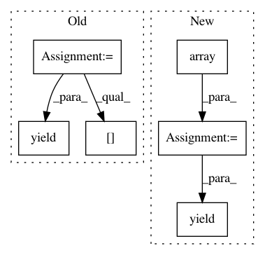

1533d1db4d1c0ebf278e2e963c05ef8ffd92cd52,deepchem/models/tensorgraph/models/graph_models.py,GraphConvModel,default_generator,#GraphConvModel#Any#Any#Any#Any#Any#,731
Before Change
self.batch_size,
pad_batches=pad_batches,
deterministic=deterministic)):
d = {}
if self.mode == "classification":
d[self.labels[0]] = to_one_hot(y_b.flatten(), self.n_classes).reshape(
-1, self.n_tasks, self.n_classes)
else:
d[self.labels[0]] = y_b
d[self.task_weights[0]] = w_b
multiConvMol = ConvMol.agglomerate_mols(X_b)
d[self.atom_features] = multiConvMol.get_atom_features()
d[self.degree_slice] = multiConvMol.deg_slice
d[self.membership] = multiConvMol.membership
for i in range(1, len(multiConvMol.get_deg_adjacency_lists())):
d[self.deg_adjs[i - 1]] = multiConvMol.get_deg_adjacency_lists()[i]
yield d
def predict_on_smiles(self, smiles, transformers=[], untransform=False):
Generates predictions on a numpy array of smile strings
After Change
y_b = to_one_hot(y_b.flatten(), self.n_classes).reshape(
-1, self.n_tasks, self.n_classes)
multiConvMol = ConvMol.agglomerate_mols(X_b)
n_samples = np.array(X_b.shape[0])
inputs = [
multiConvMol.get_atom_features(), multiConvMol.deg_slice,
np.array(multiConvMol.membership), n_samples
]
for i in range(1, len(multiConvMol.get_deg_adjacency_lists())):
inputs.append(multiConvMol.get_deg_adjacency_lists()[i])
yield (inputs, [y_b], [w_b])
class MPNNModel(TensorGraph):
Message Passing Neural Network,
In pattern: SUPERPATTERN
Frequency: 4
Non-data size: 6
Instances
Project Name: deepchem/deepchem
Commit Name: 1533d1db4d1c0ebf278e2e963c05ef8ffd92cd52
Time: 2019-05-10
Author: peastman@stanford.edu
File Name: deepchem/models/tensorgraph/models/graph_models.py
Class Name: GraphConvModel
Method Name: default_generator
Project Name: deepchem/deepchem
Commit Name: 0c241128fc008e89745690bd58e91e754aa40514
Time: 2019-05-10
Author: peastman@stanford.edu
File Name: deepchem/models/tensorgraph/models/graph_models.py
Class Name: MPNNModel
Method Name: default_generator
Project Name: YerevaNN/mimic3-benchmarks
Commit Name: 39e6232af3c56843c48d89466ecf8478eec5b9af
Time: 2017-07-30
Author: harhro@gmail.com
File Name: mimic3models/phenotyping/utils.py
Class Name: BatchGen
Method Name: _generator
Project Name: acoular/acoular
Commit Name: 97a543976472f88b7922cc8f8ef3d7c0b6cd3dee
Time: 2012-02-06
Author: sarradj@tu-cottbus.de
File Name: beamfpy/sources.py
Class Name: PointSource
Method Name: result